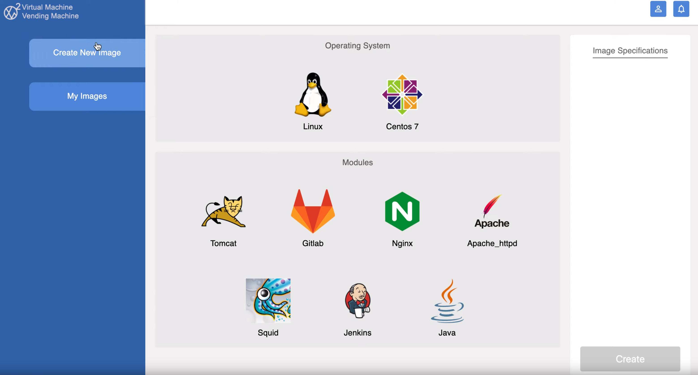

Biao Li
Java Developer
Featured Projects
Virtual Machine Vending Machine Website (VM2)
VM2 is a website that for client's developers use only. With the options such as operate system and software, it can generate an AWS image (AMI), which can be shared with other AWS users. I developed new functionalities to the web-based application that connects to multiple AWS modules. Setup and maintain the CI/CD secure pipeline, generate Ansible script for installing and managing software with different operating systems. For client's security requirement I also convert CIS benchmark PDF for different operating systems into Inspec test.
Research
A research about Amazon machine images (AMI) security
This is a school organised research about security of Amazon machine images (AMI) in AWS cloud platform. They are stored in Amazon’s ever-growing public AMI repository. These AMI’s can create Amazon Elastic Cloud compute (EC2) instances. This research is on whether the Amazon machine images in the public repository are secure or not.
Education
Master of Information Technology, graduated at 2019, GPA 2.8/4